Tipo 1
Por tejido y color
Una tela densa y oscura bloquea UV sin ningún tratamiento. Por eso buena parte de la ropa común protege bien,3 aunque su valor solo se conoce al medirlo y baja al estirarse.4
Borrador de trabajo. Lo que aparece [ASÍ] está por completar. Versión 1 · Versión 2
Chaqueta UPF de Nosadia · Para dermatólogos
Una prenda innovadora, poco común en Colombia: la Chaqueta UPF de Nosadia, con tela UPF 50+*, visera desmontable y panel facial con cremallera. Una protección que se viste: se pone en segundos, se siente liviana y deja la piel libre debajo.
EscríbenosRevísala con calma y resuelve tus dudas aquí. Si te convence, al final eliges tallas, colores y cantidades.
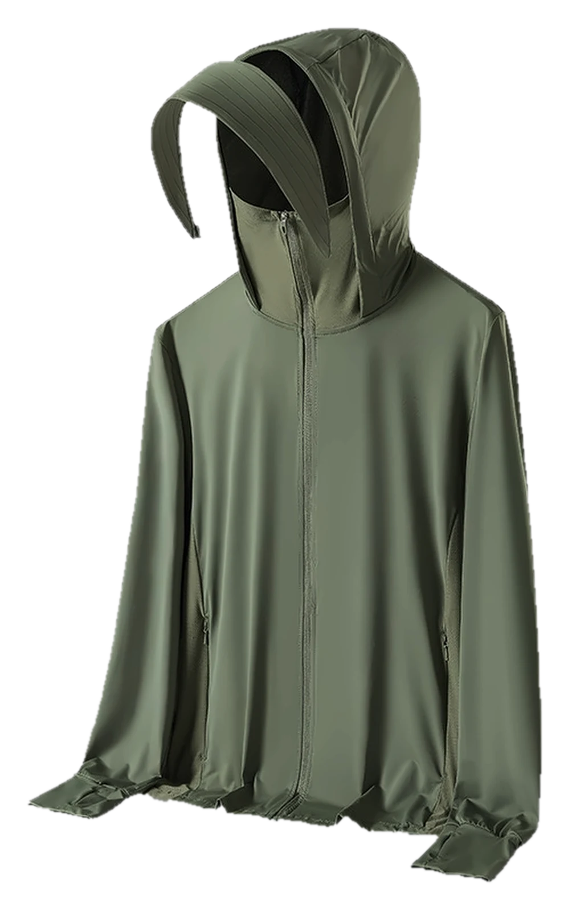
Orejas, sienes, nuca y lados del cuello son las zonas que más fácilmente se olvidan en la fotoprotección diaria.1 La capucha y la visera de la Chaqueta UPF de Nosadia las resguardan desde que te la pones, sin tener que pensar en ellas.
Es un diseño innovador y poco común en Colombia, pensado para usarse de verdad. La visera se desmonta con una cremallera cuando pasas del sol a la oficina. El panel facial se ajusta a cada momento: sube hasta la nariz cuando el sol aprieta y baja cuando ya no lo necesitas. Y cada costura y cada cremallera están terminadas con el cuidado de una prenda que tus pacientes querrán llevar al trabajo, al colegio o al parque.
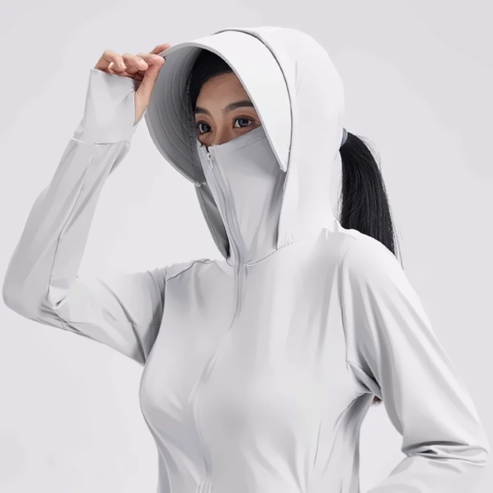
Lo que más la distingue
Sube hasta la nariz y cubre nariz, boca y mentón. Cuando no lo necesitas, baja en un segundo. Sus microperforaciones dejan respirar la piel.
Ideal para salir de la consulta. Después de un tratamiento facial, tu paciente se va con una capa más entre la piel y el sol y la contaminación de la calle, junto con el protector solar que le indiques.
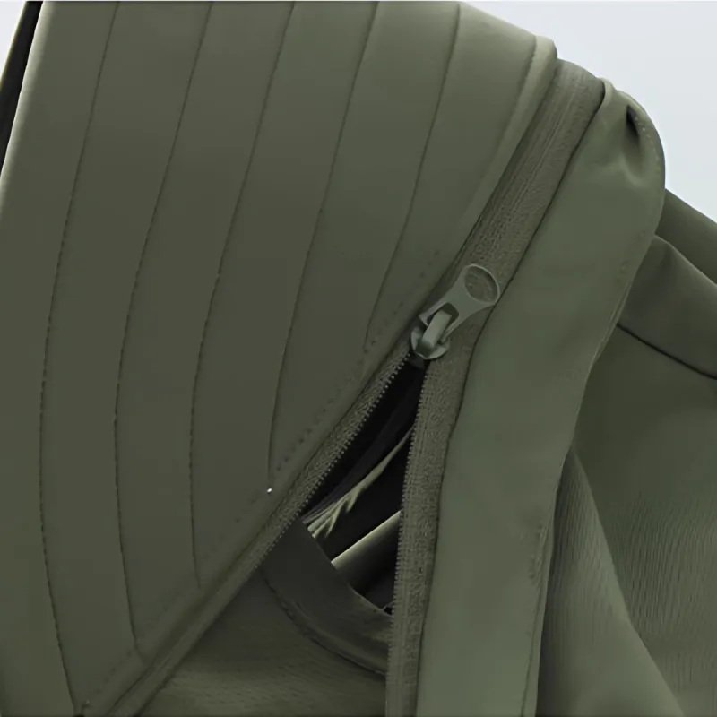
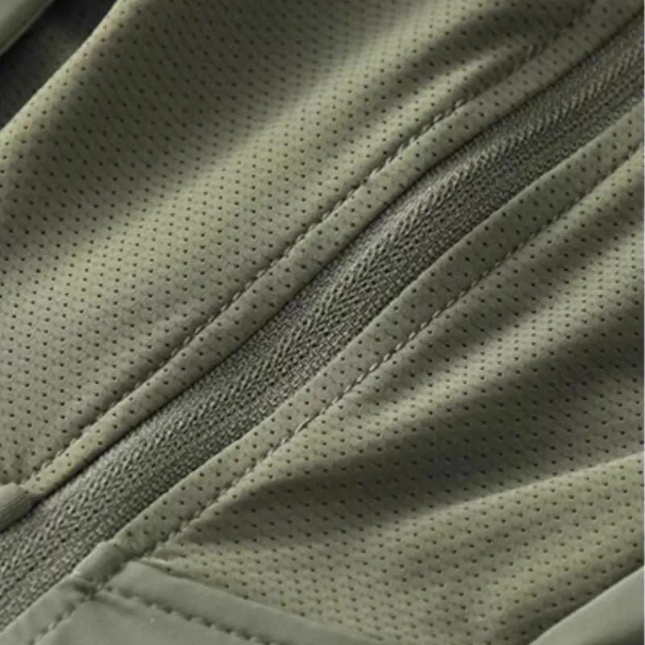
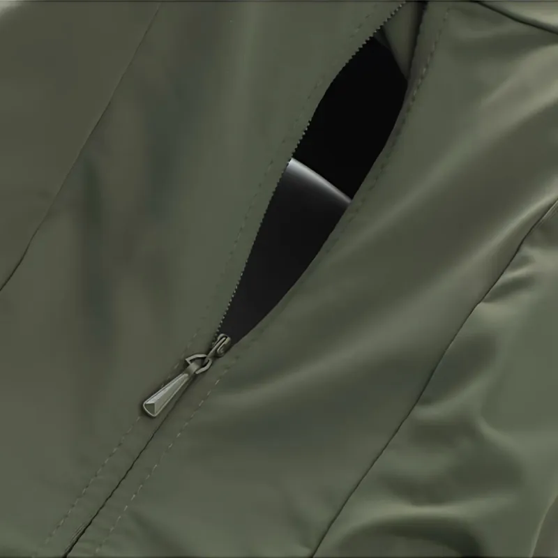
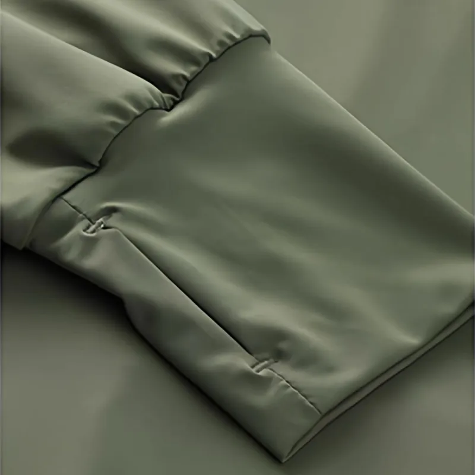
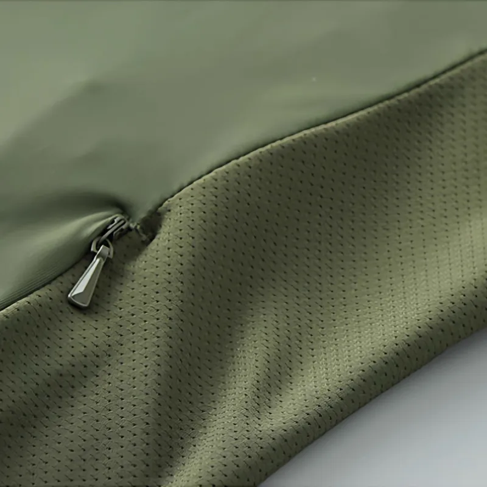
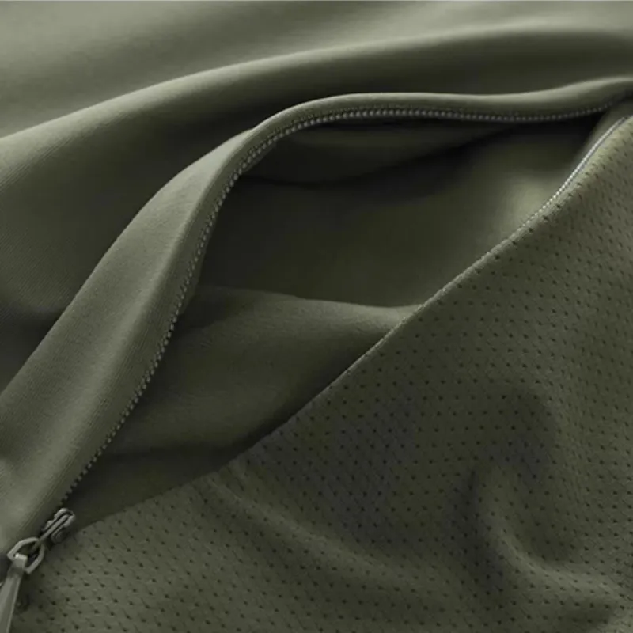
Para el día a día
Capucha abajo y sin visera: una chaqueta liviana que cubre torso, brazos y antebrazos.
Para el sol directo
Capucha y visera puestas, puño sobre la mano: suma orejas, nuca, lados del cuello y dorso de la mano, con sombra en frente y sienes.
Para las salidas largas
Todo lo anterior, con el panel facial arriba hasta la nariz.
Para evitar confusiones: la Chaqueta UPF de Nosadia no reemplaza el protector solar, lo acompaña. La tela detiene la radiación antes de que llegue a la piel que cubre, y el protector solar sigue en la piel expuesta.
Un consenso de expertos sobre melasma resume la fotoprotección en tres pilares: conducta frente al sol, ropa adecuada y protector solar.2 Cuando indicas protector solar, das un nombre concreto. Con la Chaqueta UPF de Nosadia, el pilar de la ropa también lo tiene.
El UPF indica cuánta radiación UV deja pasar una tela. Saber de dónde viene esa protección te ayuda a entender cómo se comporta con el uso.
Tipo 1
Una tela densa y oscura bloquea UV sin ningún tratamiento. Por eso buena parte de la ropa común protege bien,3 aunque su valor solo se conoce al medirlo y baja al estirarse.4
Tipo 2
El agente UV se aplica sobre la tela ya terminada. Es una vía habitual, y la protección puede bajar con los lavados, según el agente.5
Tipo 3 · Chaqueta UPF de Nosadia
Partículas minerales que bloquean UV, como el dióxido de titanio, se incorporan a la fibra al hilarla, antes de tejer. Así, la protección de la chaqueta queda dentro del hilo y no sobre la superficie. [EL INFORME DE LABORATORIO NO LO CONFIRMA: PEDIR AL FABRICANTE LA COMPOSICIÓN Y LA FICHA DEL HILO]
Estas cifras corresponden a la tela principal de la Chaqueta UPF de Nosadia, analizada por un laboratorio externo acreditado en julio de 2026 según la norma GB/T 18830-2009. Muestra: una prenda. [CONFIRMAR QUE EL INFORME CORRESPONDE A ESTA CHAQUETA] El UPF evalúa la radiación ultravioleta, hasta 400 nm.3 Más detalle a solicitud.
Valor medido: 121. La norma pide más de 40.
UVA que atraviesa la tela, en promedio. La norma pide menos de 5 %.
UVB que atraviesa la tela, en promedio. La norma no fija un límite aparte para UVB: cuenta dentro del UPF.
Norma GB 18401-2010, clase B: prendas en contacto directo con la piel.
No, lo complementa. La Chaqueta UPF de Nosadia cubre la piel que viste; el rostro y cualquier otra zona expuesta siguen con su protector solar.
Bajo la tela, la piel ya está cubierta. El protector solar se concentra en la piel expuesta, con la cantidad y la frecuencia que indiques.
Ahí todo trabaja en equipo: protector solar en todo el rostro, visera para dar sombra, panel facial sobre nariz, boca y mentón, y gafas de sol para los ojos y su contorno. En un estudio de modelado, un sombrero llegó a proteger hasta 76 % en una zona del rostro;7 por eso la sombra y el protector solar van juntos.
Una buena camisa puede proteger muy bien los brazos.3 La Chaqueta UPF de Nosadia suma lo que una camisa no trae: tela medida, capucha, visera, puño sobre el dorso de la mano y panel facial.
La chaqueta es liviana, con malla transpirable en los costados y panel facial microperforado. Pensamos en esto porque, en una encuesta por internet, 35 % de las mujeres con melasma refirió que el calor lo empeoraba.8
No. Es una prenda de vestir: no trata ni previene ninguna enfermedad o condición. El panel facial no es un tapabocas: no filtra el aire ni protege las vías respiratorias. [REVISAR CON ABOGADO]
[FUNDADORES: NOMBRE Y POR QUÉ LO HACEN, EN DOS LÍNEAS] Te responde una persona.
Revísalos y decide tallas, colores y cantidades.
Tallas [XS–XL] · Corte de mujer y de hombre [CONFIRMAR] · Nombres de color provisionales.
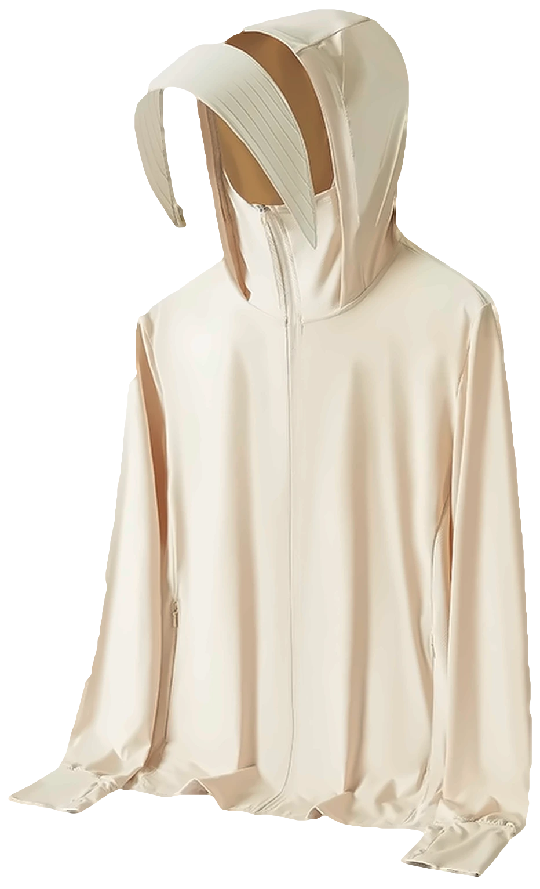
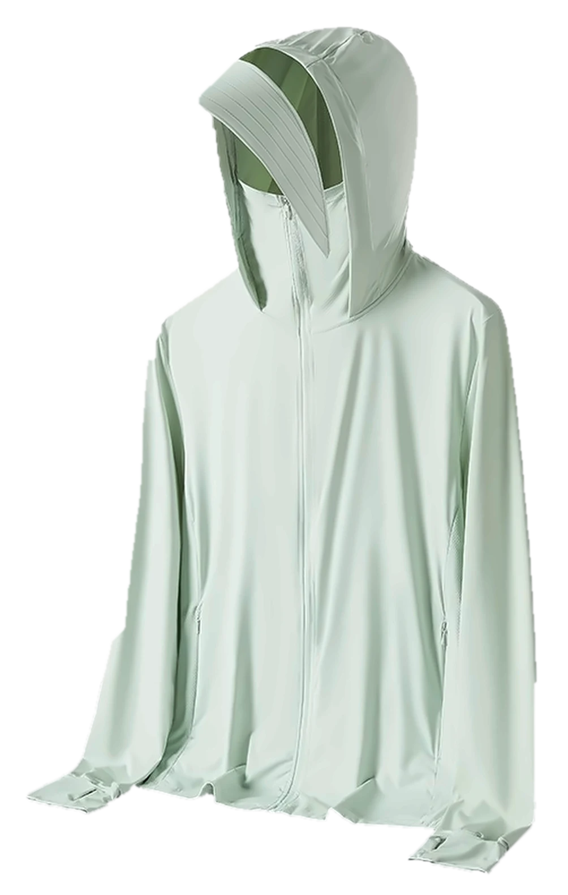
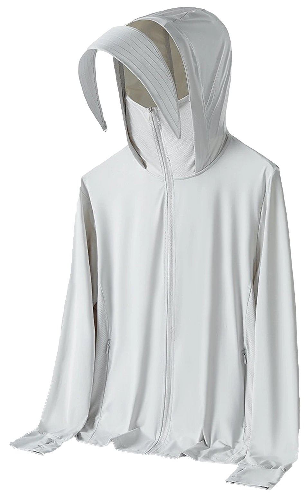
Confirma pronto para mantener la entrega del 14 de diciembre.
Envíanos tu decisión sobre tallas, colores y cantidades antes del [FECHA] y avísale a [NOMBRE] por correo o WhatsApp: [CORREO] · [WHATSAPP]
La confirmación temprana es indispensable para cumplir esa fecha.
¿Tienes una duda? Déjanos tu correo y tu pregunta, y te responde una persona.